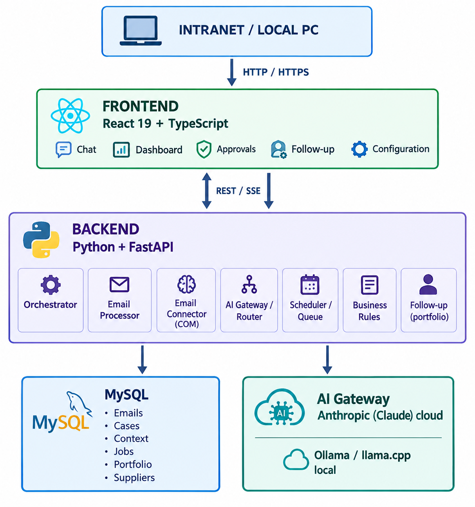

An AI agent that works around the clock reading a purchasing inbox and proactively tracking purchase orders with suppliers, creating roughly eight hours a day of follow-up capacity that did not exist before — without adding headcount.
The company's purchasing department operates with a team of two buyers responsible for placing and tracking purchase orders with external suppliers, largely through email correspondence. Timely follow-up on open purchase orders — chasing order confirmations, shipping updates, and resolving delivery incidents — is critical in a precision-manufacturing supply chain feeding the aerospace and oil exploration sectors, where delays cascade into production schedules.
Each buyer needed an estimated four hours a day to properly track open purchase order lines, on top of their core purchasing responsibilities. In practice that time was never available, so follow-up was chronically deprioritized, increasing the risk of undetected delays and incidents surfacing late. Hiring a third person dedicated exclusively to follow-up was evaluated and ruled out on budget grounds.
Rather than adding headcount, the project explored whether an AI agent could continuously monitor the purchasing inbox and take over the repetitive parts of follow-up: reading supplier replies, classifying status and urgency, and drafting the next action.
Trust was treated as something to be earned incrementally. Every AI-suggested action was classified by risk, so low-risk actions could run unsupervised from day one while anything reaching a supplier stayed behind a human approval queue.
The system was delivered iteratively by a single internal owner, acting as both architect and developer, with the core MVP through a working frontend built in roughly one week and validated against real production data as it progressed.
The AI provider was abstracted from day one behind a gateway, so the model powering the analysis could change — as it did, from a local model to a cloud provider — without touching the rest of the system.
Two buyers manually monitored their Outlook inboxes for supplier replies related to open purchase orders, decided case-by-case whether a situation required action, and drafted follow-up or escalation emails themselves. There was no systematic tracking of a next-review date per purchase order line, no consolidated view of supplier status, and no automatic alerting when a line turned into an incident — visibility depended entirely on a buyer having the spare time to look.
A modular local agent sits between desktop Outlook and MySQL, orchestrating two business flows: reactive analysis of incoming emails, and proactive scheduled review of the purchase order portfolio. An AI Gateway abstracts the model provider so the Orchestrator, persistence, and frontend never depend on a specific AI vendor, and a configurable autonomy matrix decides which AI-suggested actions execute automatically versus which land in a human approval queue.

The resulting agent continuously reads the purchasing inbox, classifies and tracks every purchase order line, proactively reviews lines that are due, drafts supplier communications, and automatically notifies the buyer when a reference turns into an incident — all while keeping a human approval queue for anything above a low-risk threshold.
The equivalent of roughly eight hours a day of follow-up capacity was created across the two-person buying team — capacity that did not exist before — without hiring, and without reducing the quality of tracking.